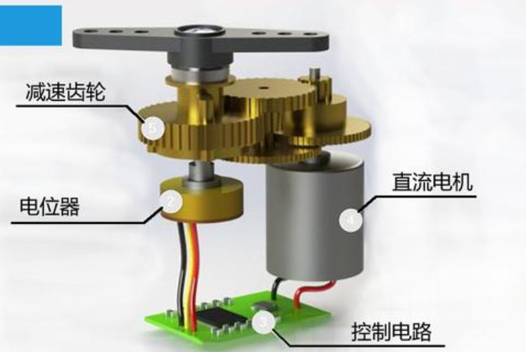
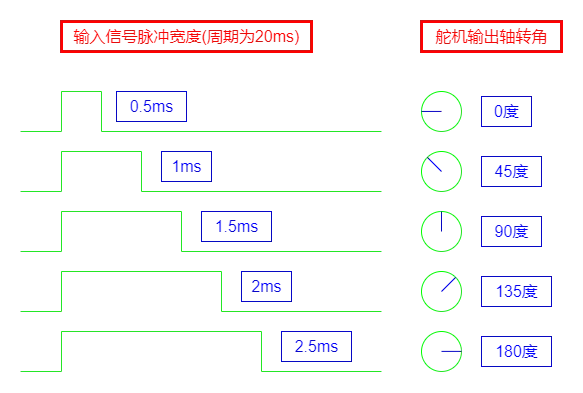
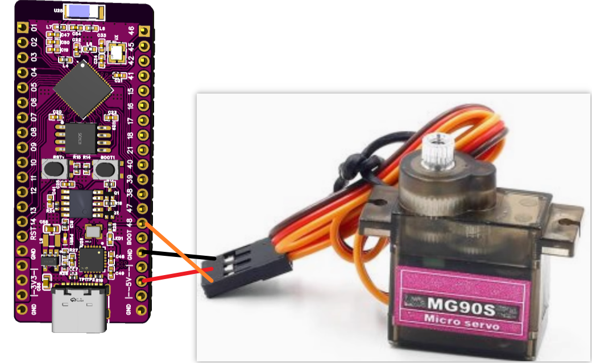

<!DOCTYPE lake>
<p data-lake-id="u267b46a8" id="u267b46a8"><span class="lake-fontsize-12" data-lake-id="uf0783a08" id="uf0783a08" style="color: rgb(64, 64, 64)">PWM（脉宽调制）是一种通过调节脉冲宽度来控制模拟信号的技术。它通过快速开关数字信号，改变高电平与低电平的时间比例（占空比），从而等效输出不同电压或功率。</span></p><p data-lake-id="u43ffce35" id="u43ffce35"><span class="lake-fontsize-12" data-lake-id="ub8b48359" id="ub8b48359" style="color: rgb(64, 64, 64)">广泛应用于电机调速、LED调光、电源管理等领域。优点包括高效、低热损耗和精确控制。PWM频率和占空比是关键参数，需根据负载特性调整以实现最佳性能。其简单可靠的特性使其成为电子系统中的核心控制方法之一。</span></p><h2 data-lake-id="uNTxB" id="uNTxB"><span data-lake-id="u52f11ce3" id="u52f11ce3">呼吸灯</span></h2><a class="yuque-card-link" href="https://player.bilibili.com/player.html?bvid=BV1choKYKEb4&amp;p=6&amp;page=6&amp;autoplay=0" rel="noopener noreferrer" target="_blank">thirdparty：thirdparty</a><h3 data-lake-id="Y60Vz" id="Y60Vz"><span data-lake-id="uf162593d" id="uf162593d">实现步骤</span></h3><ol list="u5e088810"><li data-lake-id="uaea38514" fid="uf3c8093f" id="uaea38514"><span class="lake-fontsize-12" data-lake-id="u84496e64" id="u84496e64">导包</span></li></ol><span class="yuque-card-unsupported">[codeblock]</span><ol list="u5e088810" start="2"><li data-lake-id="u3c39d06a" fid="uf3c8093f" id="u3c39d06a"><span class="lake-fontsize-12" data-lake-id="u19b3819f" id="u19b3819f">初始化引脚</span></li></ol><span class="yuque-card-unsupported">[codeblock]</span><ol list="u5e088810" start="3"><li data-lake-id="uf1aa2738" fid="uf3c8093f" id="uf1aa2738"><span class="lake-fontsize-12" data-lake-id="ue0d93657" id="ue0d93657">编写逻辑修改占空比</span></li></ol><span class="yuque-card-unsupported">[codeblock]</span><p data-lake-id="u6ba2fd3b" id="u6ba2fd3b"><br/></p><h2 data-lake-id="aqyUo" id="aqyUo"><span data-lake-id="u5a08e6bb" id="u5a08e6bb">舵机控制</span></h2><p data-lake-id="u75c9790e" id="u75c9790e" style="text-align: center"></p><p data-lake-id="u6b27ea4b" id="u6b27ea4b"><span data-lake-id="u81fed17b" id="u81fed17b">舵机是一种小型电动装置，能够精确地转动到某个特定的角度。可以想象成一种“会听话的小马达”，它可以按照指令转动到你想让它停下的位置。比如，舵机常被用在遥控汽车的方向盘上，当你想转弯时，舵机会让车轮朝着正确的方向转动。  </span></p><p data-lake-id="uedb709ec" id="uedb709ec"><span data-lake-id="u76ba6438" id="u76ba6438">​</span><br/></p><h3 data-lake-id="311dee81" id="311dee81"><span data-lake-id="u2fb4135b" id="u2fb4135b">舵机控制和普通电机有什么不同？</span></h3><ul list="u8eb76079"><li data-lake-id="ud44d8730" fid="u79dbadb4" id="ud44d8730"><strong><span data-lake-id="ucbc4723d" id="ucbc4723d">普通电机</span></strong><span data-lake-id="u05105670" id="u05105670">：普通电机通常只负责不停地转动，速度可能可以调节，但它不知道自己转到了哪个位置。比如风扇里的电机，它只会不停地转，无法准确地停在一个特定的位置。</span></li><li data-lake-id="u00b86283" fid="u79dbadb4" id="u00b86283"><strong><span data-lake-id="u6dea54a2" id="u6dea54a2">舵机</span></strong><span data-lake-id="ue93aff4a" id="ue93aff4a">：舵机不同，它不仅可以转动，还能“知道”自己转到了哪个角度。你可以告诉舵机“转到45度”或“转到90度”，它会精准地按照你的指令转动并停下。</span></li></ul><p data-lake-id="u80cb765e" id="u80cb765e"><span data-lake-id="ud068279c" id="ud068279c">简而言之，普通电机负责一直转，而舵机负责“转到特定角度并停下”，它的控制更精确。</span></p><p data-lake-id="uc45fc500" id="uc45fc500"><span data-lake-id="u5b603beb" id="u5b603beb">​</span><br/></p><p data-lake-id="u567d8c59" id="u567d8c59"><span data-lake-id="ue38be13e" id="ue38be13e">舵机的控制方式也和普通电机不一样，普通电机通电就转，而舵机需要给它发送指定的PWM才能转动到对应的角度。下图展示的就是PWM和角度之间的关系</span></p><p data-lake-id="u1a4da5c8" id="u1a4da5c8" style="text-align: center"></p><h3 data-lake-id="OO62C" id="OO62C"><span data-lake-id="u7d591b26" id="u7d591b26">实现步骤</span></h3><h4 data-lake-id="VIeeh" data-lake-index-type="2" id="VIeeh"><span data-lake-id="ub64d16c4" id="ub64d16c4">按照如图接线</span></h4><p data-lake-id="uaf10dc6a" id="uaf10dc6a" style="text-align: center"></p><p data-lake-id="u72518d78" id="u72518d78" style="text-align: left"><span data-lake-id="ue661d584" id="ue661d584">注意接线顺序：</span></p><p data-lake-id="ue30be7bd" id="ue30be7bd" style="text-align: left"><span data-lake-id="u226b4091" id="u226b4091">红色---5V</span></p><p data-lake-id="uc92a2f04" id="uc92a2f04" style="text-align: left"><span data-lake-id="u4402b5fe" id="u4402b5fe">棕色---GND</span></p><p data-lake-id="u5422962d" id="u5422962d" style="text-align: left"><span data-lake-id="ud3d334f7" id="ud3d334f7">橙色---PWM信号线</span></p><h4 data-lake-id="Gx2pP" data-lake-index-type="2" id="Gx2pP"><span data-lake-id="u9ce93e9b" id="u9ce93e9b">导包</span></h4><span class="yuque-card-unsupported">[codeblock]</span><h4 data-lake-id="Tq8WL" data-lake-index-type="2" id="Tq8WL"><span data-lake-id="u3afe1180" id="u3afe1180">初始化引脚</span></h4><span class="yuque-card-unsupported">[codeblock]</span><h4 data-lake-id="c4tny" data-lake-index-type="2" id="c4tny"><span data-lake-id="ud611a8e6" id="ud611a8e6">编写核心逻辑</span></h4><span class="yuque-card-unsupported">[codeblock]</span><p data-lake-id="u3cd425e7" id="u3cd425e7"><br/></p><p data-lake-id="ued7fc0df" id="ued7fc0df"><br/></p>